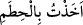
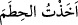

Peygamber Efendimiz’in risaletini kabul etmişti. Bundan dolayı Efendimiz onun
hakkında; “Ben Varaka’yı Cennette gördüm. Üzerinde ipekten bir elbise vardı” [164]
buyurmuştur.
Fetret döneminin ardından Müddessir sûresinin “Ey bürünüp sarınan Rasûlüm!
kalk ve uyar!” (Müddessir, 74/1,2) âyetleri nâzil olmuştur. Böylece “nübüvvet” ve
“risalet” arasındaki fark ortaya çıkmış oldu.
Ariflerden biri okuduğumuz âyetlerden şu işâreti çıkarmıştır: İrade ehli “taleb”dedir.
İrade etmeyip, irade olunan kimse ise talepde değil, “matlub”dur; yâni “taleb edilen”dir.
Matlub olmak “sevgili” olanların sıfatıdır. Görülmezmi ki Peygamber (s.a.) Efendimiz’e
“ikra’/oku” denildiğinde neyi okuyacağı şeklinde bir talep olmaksızın karşılıyor. Bunun
bir benzeri ise İnşirah sûresindeki “Biz senin göğsünü genişletmedik mi?” (İnşirah,
94/1) âyet-i kerimesidir. Çünkü bu âyetlerde Peygamber Efendimizle Hz. Mûsâ (a.s.)
arasındaki fark ortaya çıkmış oluyor. Zira Peygamber Efendimiz hakkında Allah Teâlâ
“göğsünü açıp genişletmekten” söz ederken Hz. Mûsâ bunu taleb ediyor: “Mûsâ:
Rabbim! dedi, yüreğime genişlik ver.” (Ta’ha, 20/25) Böylece Peygamber Efendimiz
(s.a.) “matlub” olurken Hz. Mûsâ, “talib” olmuş oluyor.
“Rabbinin adı ile” ifâdesine gelelim. Bu ifâdenin başındaki “ba” harfi gizli bir fiil ya
da fiilimsiye bağlıdır. Bu ifâde fâilin zamirinden hal’dir. Buna göre âyete mânâ verecek
olursak şöyle deriz: Ey Muhammed! Allah’ın adına yapışarak oku, demektir. Ey
Muhammed! Allah’ın adıyla başlayarak oku. Taki Allah’ın adı okuduğun şey bütün
cüzlerine, bitişik olsun. Bu açıklamaların ışığında burada şöyle denmiş oluyor: Ey
Muhammed! Bismillâhirrahmânirrahiym de sonra oku. Buradan anlaşılıyor ki; “İkra’
bismi Rabbike” âyet-i kerimesi başında besmele olmaksızın inmiştir. Nitekim bu
gerçeği İmam el-Buhari (rh.) açık bir biçimde beyân etmiştir. Allah’ın böyle bir emir
vermesi, adı okuma esnasında Peygamber Efendimiz’e (s.a.) güç vereceğinden ve
mevlasıyla ünsiyyet meydana getireceğinden dolayıdır. Çünkü isim ile meydana gelen
ünsiyyet, kaynaşma ve yakınlaşma bu ismin temsil ettiği varlık ile kaynaşma ve
yakınlaşmaya sebebtir. Dil ile yapılan zikir kalp ile zikre yol açar.
Bismillah kelimesindeki harfler bazı şeyleri simgelerler. Sözgelimi “bismi rabbike”
ifâdesindeki “bâ” harfi Allah Teâlâ’nın mü’minlere her iki dünyada çeşitli ikramlarda
bulunacağına işârettir. “Sin” harfi Allah’ın bütün yaratıklarının duâsını işiten ilâh
olduğunu gösterir. “Mim” harfi ise Arş-ı A’lâ’dan toprağın altına kadar her şeyin O’nun
mülkü olduğunu simgeler.
el-Kevaşi’de ise şöyle ifâde olunuyor: “İkra’ bismi rabbike” âyetinin başına “bâ”
harfinin getirilmesi Allah’ın adıyla başlamanın gerekliliğine ve bunun durmadan tekrar
edilmesine işâret etsin, diyedir. Bunu bir örnekle açıklayalım; Sözgelimi insan “
” dediğinde bunun anlamı: “Ben yuları elime aldım” demektir, eğer bu kişi
“ba” harfi olmaksızın, “
” yâni ben yuları tuttum, elime aldım demiş olsaydı bu
ifâde tekrar ve devamlılık belirtmeyecekti.